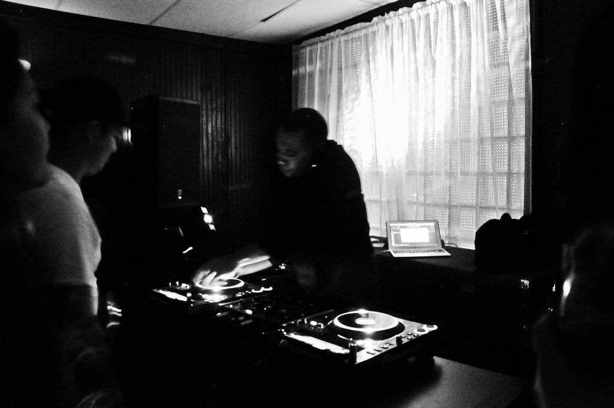
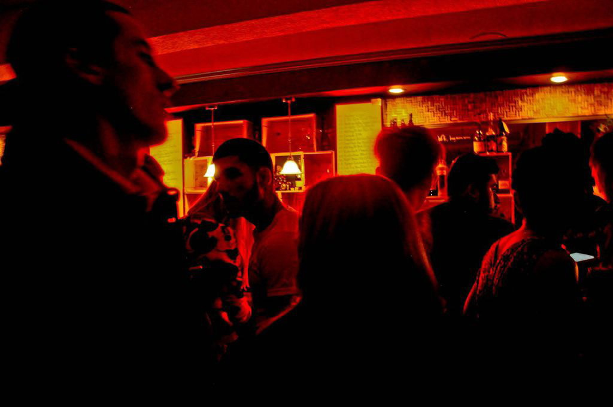
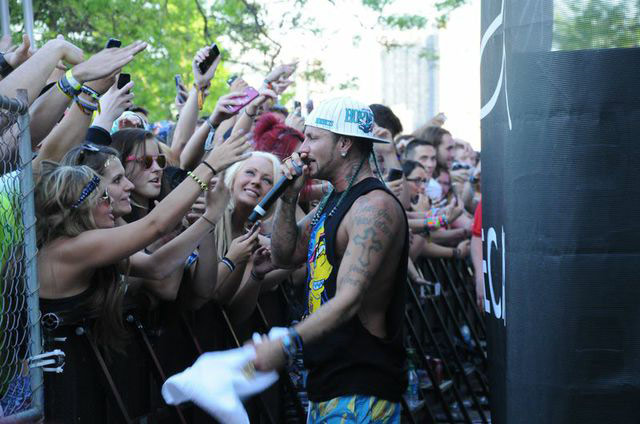
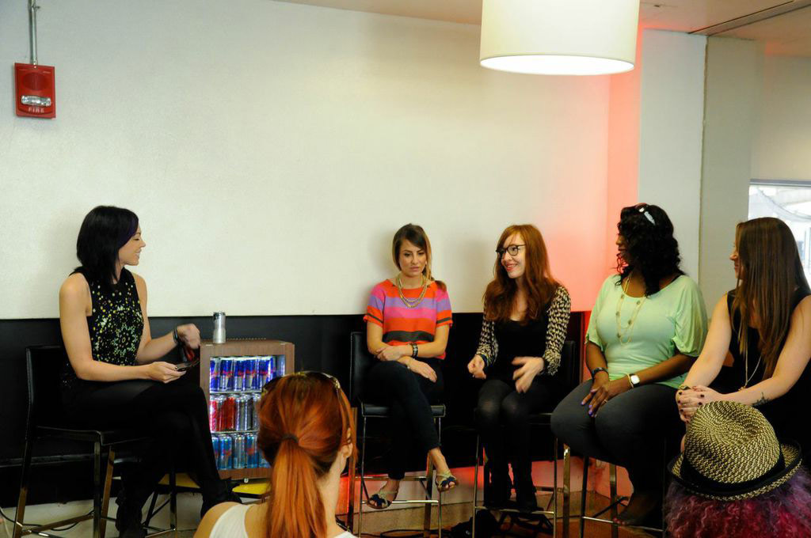
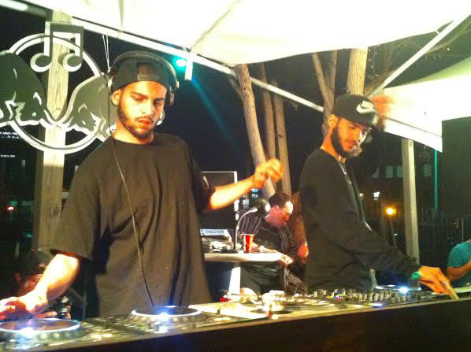
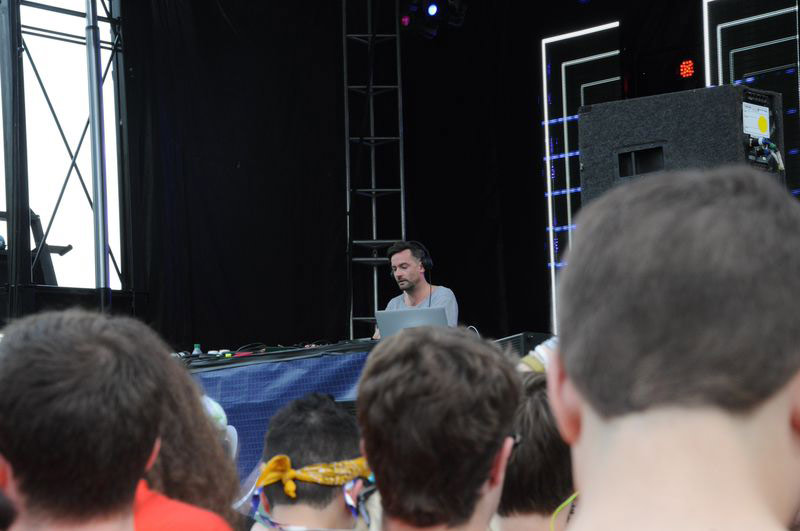

Detroit: A Movement
When they say Detroit Hustles Harder, they mean it. And Detroit goes hard, especially when Movement is happening in town.
This year more than 100,000 people from all over the world flocked to Hart Plaza in Detroit for Movement, the electronic music festival which takes place every Memorial Day weekend. Music seems to be everywhere in Detroit, as a lot of it’s roots are musical, Detroit being the birth of Motown, and also techno music which is why the festival is such a big deal. The festival was always in a state of limbo when the city was in charge of putting it on; however, when Paxahau, Detroit’s electronic music webstation and promoter took over the festival in 2006, it really began to take on a new life. Kind of like Detroit, a city in a period of rebirth.
The streets of Detroit are like nothing else. There’s a dark beauty about it, with a light at the end of the tunnel. The light are the artists, musicians, and people fighting for their city. Every wall seems to be covered with graffiti of some sort, some buildings are abandoned, but there is still silent life in them. A man walked the street holding a boombox on his shoulder blasting music, something which you don’t see much these days. Pianos seem to be commonplace on corners in the downtown area, where a young man played an original piece on a white grand piano and the ground read “let your fingers do the talking.” This isn’t the kind of stuff most people would imagine coming from a group of boys hanging out on a corner smoking Black and Milds, nor from a city supposedly broken.The weekend kicked off with a pre-Movement party featuring the Carl Craig, on his birthday, at Motor City Wine. Craig is one of the most prolific and celebrated DJs in Detroit and was very influential in Movement ‘s early days. The place was packed to capacity, the wine poureth, and people danced and cheered as Craig set the tone for the room spinning deep house.

The people were chic and diverse; people had come from all over to experience the festival, some coming from just over the bridge in Canada, and some as far as France. Whether they were dancing, scanning the room, or enjoying the fine wine, the energy in the room remained vibrant. The red lights and disco ball added a sultry flavor that could only complement the atmosphere of a hip wine bar. One could imagine that this is what a night in Europe feels like, but revel in the fact that this musical and cultural melting pot was happening in Detroit.

There was lots happening in the city that weekend. Businesses and establishments prepared for an influx of visitors, some of them first-timers with preconceived notions about the state of the city, and some of them die hard house heads. There were after parties each day of the festival, Red Bull House of Art had an art party Thursday night called Synthesia where the artists of many disciplines were showcasing the influence of electronic music and art. The Eastern Market, which on a normal Saturday brings out over 10,000 people saw their numbers rise with festival goers.
Day one of the festival featured sets from Action Bronson, Claude Von Stroke, Ataxia, Shadowbox, the jazzy electronic band Underground Resistance, and an interesting addition, Riff Raff and Lil’ Debbie. Riff Raff’s show was a spectacle; he bounced around on the stage in hot pink kicks, surrounded by large cardboard cutouts of his head with blue cornrows rapping about snorting cocaine as Lil’ Debbie drank from a bottle of champagne and her hype girl twerked to a sweat on on the Moog stage.

The Silent Disco stage area was a new feature this year that was refreshing and interesting to watch as people in headphones bobbed their heads to music played by local and upcoming DJs, offering a rather intimate way to listen to music. The Made In Detroit Stage was where the real Detroit players hung out. It was full of sets from up and coming Detroit DJs, including a first time set for Golf Clap, and turntable antics from the Detroit Techno Militia and Gabi and Minx, who were a part of the Women in Electronic Dance Music Brunch Panel on Sunday.

There was almost always an impromptu break dancing circle at the Made in Detroit stage. It was amazing to see people so free, celebrating each other, the music and the passion of dance and music. The whole festival lended itself to that notion. People came in costumes, wild colors, masks and had this sense of truly being. It was a people watching paradise, whether you were in the crowd, on the sidelines, laying on the grass overlooking the Detroit River, or in a hammock hung from trees.
By the end of day two, you knew which stage was your favorite stage, and which ones were a pain. It was also interesting to be in that space between two stages, where the music bled into each other; it felt like you were in two worlds at once. Underground was a bit intense, dark, smoky, and most rave-like, and full of the the most hardcore of festival goers. The Beatport stage was always unbearably packed and felt a bit like cattle squeezing through the one person gated entrance. Once you got in, you felt on top of the world on the pyramid stairs overlooking the stage where a drunken mishap could spiral into a domino effect of people. Moog was like a big outdoor gyrating dance party that played trap bass music, and even had twerkers, yes twerkers, at an electronic festival.
Sunday saw sets from NightShadow, Richie Hawtin, Secrets, and Baaur, a trap bass DJ, whose illuminated letter “B” shined in the night as the music pumped life into the crowd. The two Bronx bred DJ playboys, The Martinez Brothers played the Beatport stage, and later rocked the OK COOL after party at TV Lounge which went to the wee hours of the morning.

Monday didn’t slow festival goers down, as there were anticipated sets from headliners Flosstradamus and Bonobo, who gave an incredible set as he spun tunes from Black Sands and his latest album, The North Borders. Taking pictures of the massive crowd in between spinning, he played music that spoke to your soul, at one point mixing in a traditional African call and response song which inclined many to break out into African dance. Opening for Bonobo were newcomers Escort, a female fronted disco band from Brooklyn.

It wasn’t just the music that makes this trip so worthwhile. It is about discovery, resilience, sprinklings of people watching, conversations had and people met along the way. Movement is an experience, Detroit is a movement. As Tyree Guyton, creator of the Heidelberg Project says, Detroit is not dead, it never was.
Check out more pictures from Movement over at our Facebook!
photo credits: amanda contreras, amfm